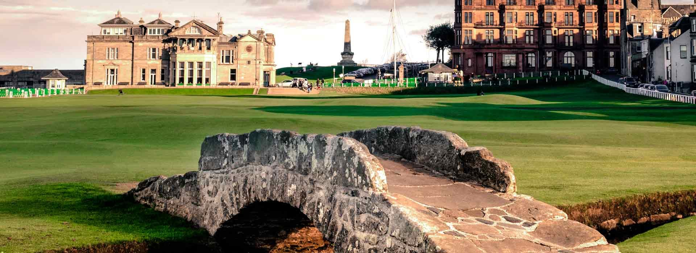
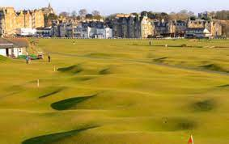
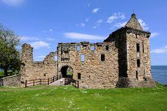

Discover St Andrews
St Andrews
Founded: 15th Century
"dum spiro spero"

Visiting
GOLF
Old Course
The Old Course in St. Andrews is a legendary and historic golf course that holds a special place in the hearts of golfers worldwide. As the oldest and most iconic golf course in the world, the Old Course is steeped in tradition and boasts a rich heritage dating back over six centuries. Golfing legends such as Jack Nicklaus, Tiger Woods, and Old Tom Morris have walked its hallowed fairways, making it a pilgrimage site for enthusiasts of the sport. With its challenging layout, unique features like the famous Swilcan Bridge and Hell Bunker, and breathtaking views of the North Sea, playing a round on the Old Course is an unforgettable experience. Whether you're a seasoned golfer or a casual enthusiast, teeing off on the Old Course offers a rare opportunity to follow in the footsteps of golfing history and immerse yourself in the timeless allure of the game. Click on the image below to find out more!
The British Golf Museum
The British Golf Museum in St. Andrews is a treasure trove of golfing history and heritage, offering visitors a captivating journey through the evolution of the sport. Located in the heart of the historic town, the museum celebrates the rich legacy of golf in Scotland and beyond, showcasing a fascinating collection of artifacts, memorabilia, and interactive exhibits. From ancient clubs and balls to iconic trophies and memorabilia from legendary players, the museum provides a comprehensive overview of the game's origins and development over the centuries. Visitors can explore exhibits on famous tournaments, pioneering players, and the global impact of golf, gaining insight into the cultural significance and enduring appeal of this beloved sport. Whether you're a devoted golfer or simply curious about its history, a visit to the British Golf Museum offers a captivating glimpse into the fascinating world of golf and its enduring legacy.# Click on the image below to go to the website!

The Himalayas
The Himalayas Putting Course in St. Andrews is a delightful attraction nestled within the grounds of the St. Andrews Ladies' Putting Club. This historic putting course offers visitors a fun and scenic experience in the heart of St. Andrews, Scotland. With its charming layout and scenic surroundings, including views of the iconic St. Andrews skyline and the North Sea, the Himalayas Putting Course provides a delightful setting for a leisurely round of mini-golf. Visitors of all ages can enjoy the challenge of navigating the course's twists, turns, and obstacles while soaking in the beauty of one of Scotland's most beloved golfing destinations. Whether you're a golf enthusiast or simply looking for a fun outdoor activity with family and friends, a visit to the Himalayas Putting Course promises a memorable and enjoyable experience in the historic town of St. Andrews. Click on the image below to visit the website!
BEACH
West Sands Beach
West Sands Beach in St. Andrews is a breathtaking stretch of golden sand that spans two miles along the Fife coastline. Famous for its natural beauty and cinematic history, this iconic beach offers visitors a picturesque setting for relaxation and recreation. With stunning views of the North Sea and the historic town of St. Andrews in the distance, West Sands is an ideal spot for leisurely walks, sunbathing, and water sports. Its wide expanse of soft sand provides ample space for families to play, while the rolling waves beckon surfers and swimmers alike. Whether you're seeking a tranquil escape or an adventurous outing, West Sands Beach offers something for everyone to enjoy amidst the beauty of Scotland's coastline. Click on the image below to find out more!

East Sands Beach
East Sands Beach in St. Andrews is a charming and picturesque stretch of coastline located just a short distance from the town center. This delightful beach, with its soft sands and shallow waters, is perfect for families and visitors of all ages. With stunning views of St. Andrews Bay and the surrounding countryside, East Sands Beach offers a tranquil setting for relaxation and recreation. Visitors can enjoy leisurely strolls along the shoreline, picnics on the sand, or even a refreshing dip in the sea during warmer months. The beach is also popular for various water sports activities such as windsurfing and kayaking, making it a favorite destination for outdoor enthusiasts. Whether you're looking to unwind in nature's beauty or embark on an adventure by the sea, East Sands Beach provides a delightful escape for all who visit. Click on the image below to find out more!

LANDMARKS
St. Andrews Cathedral
The ruins of St. Andrews Cathedral are one of the most iconic landmarks in the town. Built in the 12th century, it was once the largest church in Scotland and an important center of pilgrimage. Today, visitors can explore the remains of the cathedral, including the impressive west front and St. Rule's Tower, and learn about its fascinating history. Click on the image below ot find out more!

St. Andrews Castle
Perched on a cliff overlooking the North Sea, St. Andrews Castle is another historic landmark worth visiting. Built in the 13th century, the castle played a crucial role in the history of Scotland, serving as a royal residence and fortress. Highlights of the castle include the underground mine and counter-mine, the bottle dungeon, and the stunning coastal views from the battlements. Click on the image below to find out more!
UNIVERSITY
Discover the University of St. Andrews, Scotland's oldest and most esteemed institution of higher learning. Founded in 1413, this historic university boasts a rich legacy of academic excellence and intellectual tradition. Explore its picturesque campus, wander through centuries-old buildings, and immerse yourself in the vibrant atmosphere of learning and discovery. From its storied past to its innovative present, the University of St. Andrews offers visitors a captivating glimpse into the heart of Scottish education and culture. Click on the image below to visit the official website!